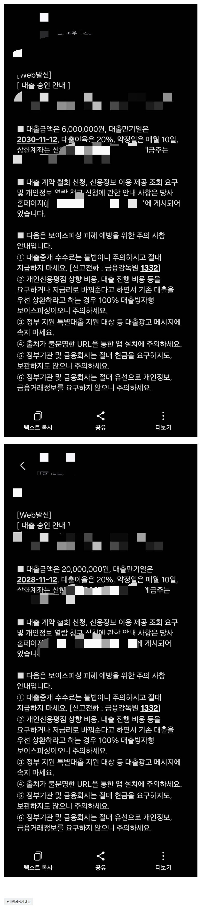

[개인회생자대출] 재직한달, 타중개사통해서부결된후 뱅크앤론통해서 2600만 승인. 김용혁이사님 김현섭과장님 정말 감사드립니다ㅠ
재직형태 : 직장인(정규직)
재직기간 : 1개월 조금넘음
사대보험 : 유
연소득 : 7000만원
기대출 채무내역 : 대부1건 1980만원
회생변제회차 : 총45회차중 35회차 (2회미납) 월변제금 129만원
전 직장 퇴사후 갑작스레 돈이 필요한 상태가되었는데 새로운 직장이 재직이 막 1개월 넘는상황이었습니다. 다른 중계업체들은 안된다..3개월 지나면 된다 그리고 진행한업체들은 제 조건에 부합하지도 않는 금융사에 막 찔러보기 식으로 진행하고..부결만 나왔습니다. 하지만 뱅크앤론은 달랐습니다. 상담을 하자마자 대표님께서 정확한 금융사 몇곳만 찍어주셨는데 첫 금융사 가조회 결과 기존채무 1980대환 + 회생미납2회 257만원 +가용자금 350만원가량 확보할수 있었습니다..정말 감사합니다. 다른 분들도 다른곳보다 여기 뱅크앤론에서 한번 진행해보십시요. 정말 다르다는걸 느끼실겁니다. 대표님 감사합니다

https://cafe.naver.com/cityman88/309400